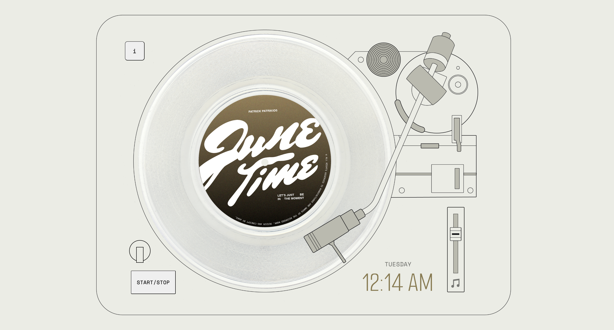
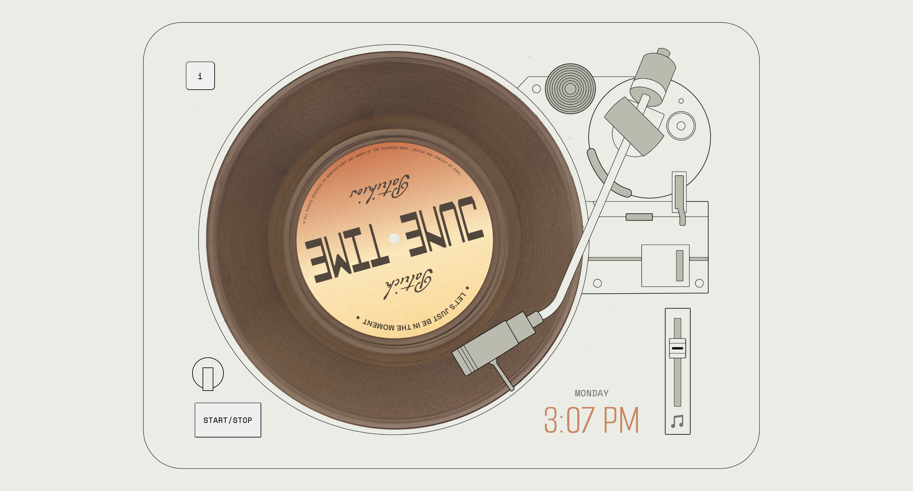

Project Overview
The creative prompt I have chosen is skeuomorphism, and the technique I have chosen to implement is date/time: Date.now(). In this project, I will attempt to build a skeuomorphic interface of a turntable that will play different variations of a song depending of the time of day the user is in. The design of the vinyl record will also be be changed every time the song variation changes. The track I am using is 'June Time' by Patrick Patrikios, which is free to use with the YouTube Audio Library licence. I will be editing the different variations of the song with Reaper. There will be 3 variations in total. The visual direction of the project is greatly inspired by nu-brutalism, which is characterised by high contrast elements and blocky layouts. While the interface will closely replicate the look and functionality of a real record player, it will be designed in a minimalist vector style. I will be using Adobe Illustrator to illustrate the vector elements before importing them into Visual Studio Code.
I am generally satisfied with the final UI (user interface) of the project, as I have successfully implemented all the functions I had set out to achieve during the planning stage and more. I have definitely learnt a lot from all the trial and error and problem solving, and improved my skills in HTML, CSS and especially Javascript over the course of this project.
Your design's guiding values and how they were embodied in the UI.
TransparencyAltogether, they are only 4 different interactive features: starting and stopping the vinyl, controlling the volume of the music, toggling the ambient sound and opening the information dialog. All these features are displayed on the same page, bounded by the vinyl player interface, so the user does not need to scroll down or put in much effort to look for them. And as the user’s cursor hovers over any of the elements, there will be feedback to immediately let them know that they have found one of the interactive elements. The user experience was designed to be straightforward and intuitive so the the users would be able to seamlessly navigate the UI without requiring explicit instructions. This is how I implemented transparency in my UI.
LearnabilityTo assist with the learnability of the UI, I implemented introduction and information dialogs. When the page loads for the user,
the introduction dialog alerts them that the interface will play audio and the user has to acknowledge this before the music starts to play. This will lessen confusion for the users when they visit the interface for the first time, and they would not be caught off guard when the music plays.
The information dialog is partially disguised in the main interface as I did not want it to distract the users from the main UI.
The role of this dialog is to inform the user of the recreational purpose behind the interface, as well as of the time feature that
updates the music and appearance of the interface, so that they would be able to engage with interface with that context.
There is intentionally no further information or instruction on how to use interface as I believed that the UI will be intuitive enough
to help the users learn the interface on their own.
Your rationale in designing your UI's feedback, information design, mapping and learnability.
Feedback Although rotating an element seems simple, I believe that the visual imagery of the vinyl record spinning is the most powerful piece of feedback within the project. As most people would be familiar with the spinning of a disk or a vinyl record as an indicator that music is playing, it would also signal to the user here that the music is the core feature of the interface.
Additionally, this is the feedback from the user’s first interaction: the close button on the introduction dialog. When the user clicks the button, only then does the needle start to move, the vinyl record begins to rotate, and the music playback starts. As first impressions play a huge part of capturing the users’ attention, the experience was designed this way to pique their interest in the UI and be curious about what will happen next.
I also designed other smaller forms of feedback using CSS for the other interactions. I mainly made use of the :hover pseudo class to fill the buttons whenever the user hovers over them, as a way to indicate to them that it is an interactive element. This feedback is important because there is a lack of labelling and instructions on how to operate the different interactive elements, and if my intention was to allow users to figure it out themselves, this feedback would at least provide hints to help them along. The start/stop button and information button have a subtle scale transformation added in the hover class on top of the fill colour to make those interactions more engaging.
And aside from hover, I also made use of position change with the ambient sound dial on the bottom left of the interface that moves up and down based on whether the dial in switch on or off. And for the volume slider, using svg paths, I made the music icon change to a mute icon whenever the slider is at 0 value, and mute the volume automatically if the user clicks on it. Although the feedback is more subtle than the vinyl record, I hope that I will help create a deeper immersion for the users of the interface.
As my design was meant to be a skeumorphic reference of a physical vinyl record player, the overall information design and mapping
was already mostly fixed. The positions of the needle, disk, and start/stop button were features that I referenced directly,
and what is more conventionally the speed slider, I had converted to a volume slider instead. The features that I had to decide
how to map out were the ones unique to my UI: the information button, the ambient sound dial and the clock.
For the information button, I referenced the mapping of menu buttons as that is the closest equivalent to the function of my button.
Menu buttons are often placed at the top of the page as they allow users to quickly navigate a site without causing disruption to the
main content of the page. Thus, I placed this button on the top-left of the interface. I used a rounded rectangle shape, as I thought the
rounded corners complement the overall design more, and used a monospaced typeface as it suited the nu-brutalism aesthetic I was going for.
For the ambient sound dial, I placed it above the start/stop button as it has a very similar function but controls a different audio.
The start/stop button toggles the playback of the music track, while the dial toggles the playback of thee ambient sound. By grouping
these two buttons, it creates a visual relationship for the user, which will hopefully make the user flow more intuitive.
For the clock, I must be honest and say that initially, there was the only part of the interface left that had enough negative space to
comfortably host the clock feature. However, I think this mapping ended up being more cohesive after adding the needle animation.
After the user clicks ‘close’ on the introduction dialog, the needle moves over the clock before reaching the disk. This animation
directs the user’s attention to the clock at the beginning of their experience, which reinforces the significance that time plays in
this interface.
Any significant changes since your work in progress milestone.
From the prototype submission in assignment 2, I successfully incorporated
the feedback from the peer-testing session and consultations, as additional
functionalities that I thought would improve the UI. This included the
date.now() features, that updates the vinyl colour, music and ambient
sound based on the time of day, as well as display the current day and
time on the user’s device-which also changes colour as the vinyl updates.
I successfully got the volume slider to control the volume of the music, and added a
mute button function so that the user can more conveniently toggle the volume to
mute and vice-versa. This accessibility function was achieved by using svg paths
and CSS classes, I had designed the vector logos myself in illustrator and later
imported them into visual studio code. I chose to work with an svg format instead
of img because it would allow me more flexibility to customise the hover appearance.
This actually caused a little snag in my project, as I could not link the javascript function
to the HTML code successfully with the svg images. But after discussing during consultations,
I managed to figure out the solution, which was to define the path coordinates directly in javascript
instead to trying to change the svg class itself. I also had the default slider
value to be at 70 instead of 50, since it was more conventional for a volume slider
to be set above half volume. That and the addition on the music icon was to better
signal to users that the slider controls volume, instead of the conventional speed sliders found on turntables.
I also updated the information dialog to include more information about the
UI changing based on day, afternoon and night, as I was told that this would bring
better clarity to the date.now() function of the UI with the right amount of
specificity. I also added all my audio references, all copyright-free,
in this dialog using the details and summary elements to insert it into a
dropdown menu. As this information might be less important to users, I felt that
it was appropriate for this information to be hidden unless the user wants to look
for it, as the sheer amount of text could become distracting for the user.
Your navigation of the production timeline and how you spent your development time.
In week 4 after looking at the assignment brief, I kind of lucked out with inspiration and established quickly this idea of a digital vinyl record player using the technique of skeumorphism. In the following 2 weeks I was searching up visual references across Google and Pinterest,
and decided on the aesthetic of the UI and basic functionality it would require per the brief. Once I had decided to implement the data.now() technique, I drew up the system map that would guide the process of building out this interface. In week 6 was when I started the coding proper, with 1 vinyl design, 1 music track and 1 ambient track prepared - what I believed was sufficient for the first prototype. I used Adobe Illustrator and some Photoshop to design the appearance of the UI, and used Reaper to prepare the remix. I figured that since it would be challenging for my test users to test the date.now() feature during the class session, I held off writing that complicated part of the code for after the assignment 2 submission. I also spent week 6 fleshing out the written parts of the millstone presentation. Although there were some struggles here and there, I managed to get the prototype to a satisfactory standard for the user-testing.
After the submission in week 8, I spent the next week implementing the remaining functions in my system map and the feedback from the peer user-testing through out weeks 9,10,11. During the in-class consultations of this period, I managed to consult regarding the problems I was running into and also received additional notes on how I could further improve my UI. By week 12, the UI was mostly completed with some minor bugs, which I managed to fix without much issue. I spent the rest of this last week writing the reflection document.
Appearance of Prototype During User Testing
The design aspect that you are most proud of.
The design aspect that I am most proud of is the vinyl record animation. It is the combination of factors that makes it my favourite: the typography and colours that set the mood for the listener through visual design, the responsiveness of the play and pause function, and of course, the music that is playing. These factors really complement each other and creates a very satisfying experience overall. It is exactly as I envisioned when I was ideating this project.
The design aspect you found most challenging.
While it was not supposed to be very challenging, at the beginning, building the code for the toggle play/pause button was particularly time-consuming. It was my first time working on a UI that is not mainly HTML and text-based, and I was still very new to Javascript at the time, so it took a little longer for me to learn how to achieve the things that I wanted to do. I think writing the if…else statements were quite confusing to me a first as well, which was what I needed to use for my toggle play/pause function. As I did more research, and even more troubleshooting, I gradually got better and more used to Javascript as I went. Writing and processing the logic on paper and code commenting on the script definitely helped me in processing my thought as well.
Other challenges I encountered.
One of my greatest takeaways in coding JavaScript was learning the difference in declarations (eg.const, let and var). I had encountered some issues where I had multiple const declarations for the same element, which created errors in my code. I circumvented this problem by using different var declarations catered to each specific function I wanted to write instead. With this method though, I had to make sure that I gave each var declaration very detailed names, so that the declaration names would not overlap in my extensive javascript document.
But inevitably, I still faced complications due to overlapping code. As I started to expand the project with more functions, I had to alter or remove some of the older code in order to make sure the new code runs effectively. For example, in the prototype, I had separate functions to call the start of the vinyl record rotation and the music to play when the ‘close’ button in the introduction dialog, and this worked smoothly at the time. However later on, when I added the animation of the needle, I wanted the vinyl record to start rotating only after the needle reaches its final position, and for the music to start playing after that delay as well. To achieve this, I wrote an entirely new function, making use of the classList and setTimeout properties. This new function worked, but I realised when I previewed the interface, the music started to play immediately upon landing on the site without any user actions. I was perplexed by this, but I went through the code with the audio id and I found out it was because the initial code to play the music on ‘close' had a .play() written into it. Because I had shifted around the older code to make sure the new one works effectively, I had accidentally created conflicting instructions in the script and am now calling for the music to be played automatically when the site loads. I commented out the .play() line, and the music does not play automatically anymore.
Another minor issue I was tussling with was the design of the UI. For this project, I chose to base it off a nu-brutalist aesthetic. As I have always been a maximalist when it comes to my design style, it was a challenge that I chose to give myself this year to create more minimalist designs. That being said, when I had already incorporated all the functionality that I had planned, I could not help but feel like something was missing. But I accessed that in the end, the simplicity of the UI would provide users with a comfortable experience, and to add anything more would overcomplicate it.
User Interface
🌅 Morning Version (12am-8am)
🌇 Midday Version (8am-4pm)

🌃 Night Version (4pm-12am)
As my background largely lies In motion graphics and graphic design, coding an interface such as this has really presented me with an interesting challenge. Although it was very daunting in the beginning, I started with the part that felt most comfortable for me: design. Once I had defined and mapped out the problems I had to solve in order to achieve my final design, everything slowly came together piece by piece, and learning from the consultations to break down the steps and logic on paper first was especially helpful. Coding was frustrating and very mind-boggling at times, but with every error I encountered, I became more determined to solve the problems I encountered. And I am proud of what I have achieved with this project!